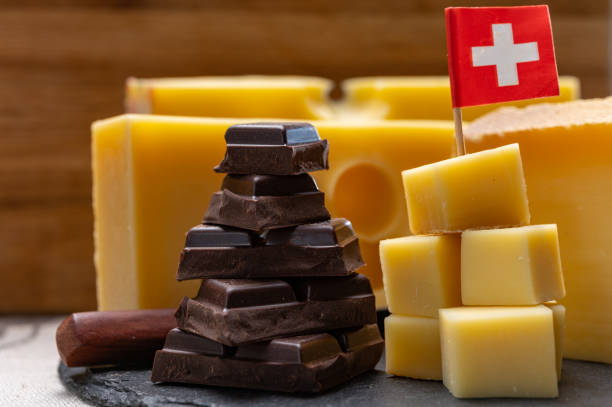

SWITZERLAND
Switzerland celebrates a range of festivals and events that reflect it’s cultural diversity. Each linguistic region contributes its own customs and festivities thus creating a dynamic and varied cultural calendar. Traditional Swiss folklore, music, and dance are cherished aspects of the cultural heritage, often showcased in local celebrations such as the vibrant Fasnacht carnivals. The Swiss National Day on August 1st is particularly significant, celebrated with fireworks, parades, and communal gatherings. As mentioned previously cuisine plays a significant role in Swiss culture. Fondue and raclette are iconic Swiss dishes enjoyed communally, emphasizing the social aspect of dining. Swiss chocolate is another global symbol of culinary excellence.
Home to some of the most notable brands such as Rolex, Swiss watches have earned a reputation due to their attention to detail and commitment to quality. The Swiss Made label, indicating that a watch is produced in Switzerland, is a mark of authenticity and excellence, enhancing the craftmanship. While rooted in tradition, Swiss watchmakers are also at the forefront of technological innovation. Many brands incorporate cutting-edge materials and advancements in watchmaking technology to enhance performance. The Swiss watchmaking industry continues to be a global leader in producing timepieces that are cherished for their quality and craftsmanship.